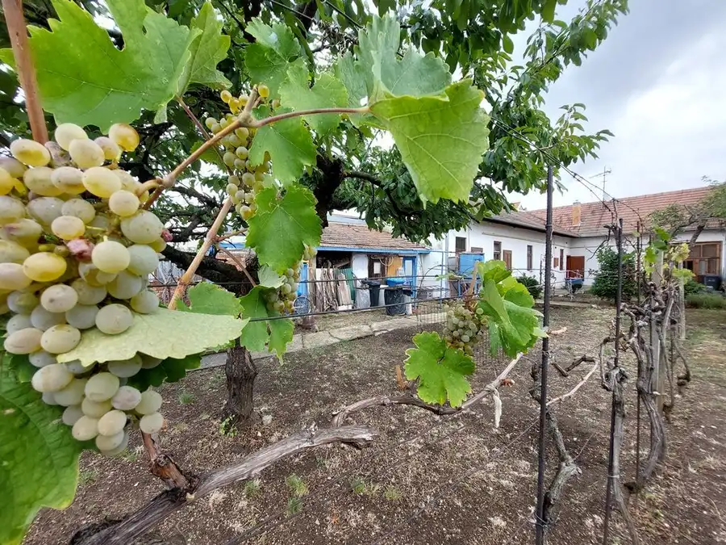
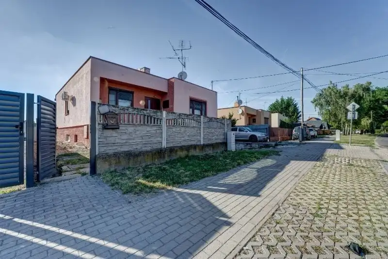
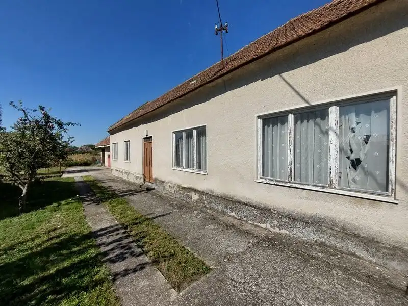

PREDAJ DOMU – 4 izb. Rodinný Dom, Benkova Potôň, 110 m2, pozemok 550 m2.
Horná Potôň
- Plocha110 m²
- StavNovostavba
- VlastníctvoOsobné
O nehnuteľnosti
Hľadáte praktické rodinné bývanie vo výbornej cene s nízkou energetickou náročnosťou a s dostupnosťou k vybaveniu mesta? Ponúkame na predaj Rodinný Dom v uzavretom areály v stave Holodom následne s možnosťou dokončenia do stavu štandard podľa požiadaviek klienta.Úžitková plocha domu 110 m2 na pozemku 495 m2 + podiel na prístupovej ceste cca 60 m2 so zastavanou plochou 130 m2 a krytou terasou 12 m2.Dom bude po dokončení plne energeticky zabezpečený s vlastným zdrojom pitnej vody, s prípravou pre krb s rozvodmi teplého vzduchu do každej miestnosti s výkonným a zároveň tichým ventilátorom, keď podlahovým kúrením budete len prikurovať. Kolaudácia jar 2027VÁŠ DOM A JEHO PREDNOSTI ( po dokončení do holodomu) :- tehla Porotherm 30 cm, izolácia 150 mm, strecha Mediterran- izolácia strechy fúkaná izolačná pena hrúbka 220 mm,- okná 3 sklo, tmavá hnedá „sienna nocce obojstranne, - vonkajšie dlažby pod betónované, krytá terasa 12 m2,- oplotený pozemok, (bez predného oplotenia),- zarovnaný terén pozemku, parkovanie pre 2 až 4 autá, - el. podlahové kúrenie, odkladací priestor na podkroví 20 m2, - centrálna vstupná brána pre celý objekt - vlastný zdroj vody, čistička odpadových vôd,- komín, príprava pre krb, stropné teplovzdušné rozvody od krbu v každej izbe, - fasáda podlieha výberu farby podľa klienta- kompletná občianska vybavenosť, len 25 min od BA. MOŽNOSŤ DOKONČENIA DO ŠTANDARDU S KOMPLETNÝM VYBAVENÍM:- podlahy, zárubne, dvere, obklady, dlažby, sanita kúpeľne a toaliet,- bez kuchynskej linky- získavate možnosť výberu materiálov pre štandard podľa vlastného vkusu, - možnosť kompletnej inštalácie alarmu so snímačmi vo všetkých izbách domu- možnosť inštalácie krbu s krbovou vložkou.Rád Vás osobne privítam pri obhliadke nehnuteľnosti. Teším sa na Vás každý deň, v priebehu dňa, podľa želania večer a samozrejme aj počas víkendov.( komunikácia v slovenskom, maďarskom, anglickom a francúzskom jazyku )Cena nehnuteľnosti v stave Holodom: podľa kalkulácie pre rok 2026: 239,990.- €Cena štandardu pre rok 2026: cca 15,000.-€, podľa výberu materiálovPOZNÁMKA: Rodinný Dom je v procese dokončovania, aktuálne Hrubá zastrešená stavba s osadenými oknamiuž s inštalovaným zdrojom pitnej vody a s čističkou odpadových vôd.Fotodokumentácia je s použitím záberov inej stavby rovnakého typu.Aktuálne zábery sú uverejnené v závere fotodokumentácie a sú aktualizované v náväznosti na výkon prác.V cene sú zahrnuté kompletné poplatky spojené s prevodom nehnuteľnosti.K dispozícii finančné a právne zastúpenie klienta.Zabezpečený kompletný servis a priebeh obchodného prípadu.Kontakt na makléra:Ing. Tomáš Hudák0917 623 827hudak@hudakreality.sk
Parametre
| Doprava | Diaľkový autobus, Vlak, Cesta |
|---|---|
| Druh | Rodinný dom |
| Druh domu | Bungalov |
| Dátum zverejnenia | 12. 4. 2023 |
| Energetický certifikát budovy | nie je |
| Orientácia | Juhovýchodná, Juhozápadná |
| Plocha pozemku | 550 m² |
| Počet izieb / miestností | 4 |
| Počet kúpeľní | 2 |
| Počet nadzemných podlaží | 1 |
| Príprava teplej vody | El. akumulačný boiler |
| Prístupová komunikácia | Betónová |
| Rok kolaudácie | 2026 |
| Rok výstavby | 2025 |
| Stav nehnuteľnosti | Novostavba |
| Terás | 1 |
| Terén pozemku | Rovinatý |
| Typ | Predaj |
| Typ konštrukcie | Tehlová |
| Vlastníctvo | Osobné |
| Voľnočasové aktivity | Rybolov, Turistika, Cykloturistika |
| Vybavenie | Terasa, Krb, Špajza |
| Vykurovanie | Podlahové |
| Zastavaná plocha | 130 m² |
| Zdroj tepla | Kombinovaný |
| Úžitková plocha | 110 m² |
Kde to je


Mohlo by Vás zaujímať

DomNové10 295 000 €PREDAJ DOMU – 4 izb., Pezinok, Vajanského ul., 167,5 m2, pozemok 564 m2. Pezinok 167.5 m² Hľadáte praktické rodinné bývanie vo výbornej cene s dostupnosťou k vybaveniu mesta a s nádychom vinohradníckej tradície ? Verím, že dom, na ktorý sa…
DomNové10 156 000 €PREDAJ DOMU – 4 izb., Lehnice Centrum, 150 + 150 m2, pozemok 404 m2. Lehnice 150 m² Máte chuť vziať do rúk staršiu ale naopak veľmi solídnu nehnuteľnosť a spraviť z nej Vaše praktické a veľmi priestorné bývanie ?Verím, že áno a to v…
DomNové10 199 000 €PREDAJ DOMU – Starší RD, Orechová Potôň, Pozemok 1700 m2, vlak, diaľnica, nutná rekonštrukcia. Orechová Potôň 120 m² Nebaví Vás kúpiť hotový Rodinný dom a len tak sedieť a nič nemusieť robiť? Príďte sa pozrieť, ponúkame Vám nehnuteľnosť, obývateľnú, avšak nudiť sa…